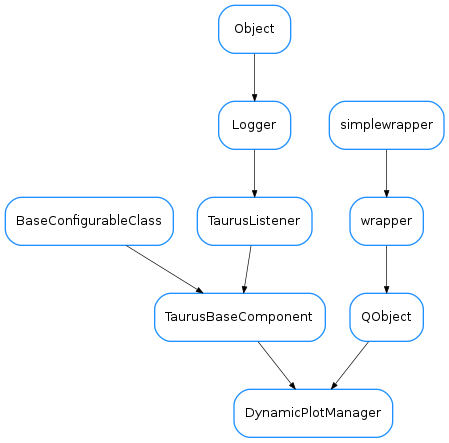

DynamicPlotManager¶

-
class
DynamicPlotManager(parent=None)[source]¶ Bases:
PyQt4.QtCore.QObject,taurus.qt.qtgui.base.taurusbase.TaurusBaseComponentThis is a manager of plots related to the execution of macros. It dynamically creates/removes plots according to the configuration made by an ExperimentConfiguration widget.
Currently it supports only 1D scan trends (2D scans are only half-baked)
To use it simply instantiate it and pass it a door name as a model. You may want to call
onExpConfChanged()to update the configuration being used.-
createPanel(widget, name, **kwargs)[source]¶ Creates a “panel” from a widget. In this basic implementation this means that the widgets is shown as a non-modal top window
Parameters: - widget (
QWidget) – widget to be used for the panel - name (
str) – name of the panel. Must be unique.
Note: for backawards compatibility, this implementation accepts arbitrary keyword arguments which are just ignored
- widget (
-
getPanelWidget(name)[source]¶ Returns the widget associated to a panel name
Parameters: name ( str) – name of the panel. KeyError is raised if not foundReturn type: QWidgetReturns:
-
newShortMessage¶
-
onExpConfChanged(expconf)[source]¶ Slot to be called when experimental configuration changes. It should remove the temporary panels and create the new ones needed.
Parameters: expconf ( dict) – An Experiment Description dictionary. Seesardana.taurus.qt.qtcore.tango.sardana. QDoor.getExperimentDescription()for more details
-